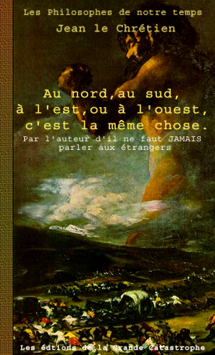

 |
"En réalité je
suis deux personnes et un seul vrai dieu, un mystère semblable
à celui de la Sainte Trinité."
Toute grande œuvre, à quelque degré,
est toujours incomprise. Mais celle de l'Empereur, plus encore que
les autres, provoque les malentendus. Mais l’essentiel est que
l’autorité philosophique de Jean le Chrétien se
soit universellement imposée, au point qu'il est reconnu aujourd’hui
pour l’un des génies qui ont modelé le visage ce
siècle. Dans cet ouvrage l'Empereur souligne l’intérêt
qu'il porte aux problèmes de la culture et de l’histoire,
en même temps qu’il analyse les liens avec les points cardinaux. Pour Jean le Chrétien l'histoire est
sans enjeu et comme désorientée, mais tout baigne dans
une lumière onirique où le moindre détail prend
un relief inoubliable. Dans cet ouvrage l'Empereur nous parle de ses
aspirations mythiques en termes de destin et de détermination.
Son œuvre est le symbole actif d’un véritable renouvellement
dont la critique d’aujourd’hui n’a pas fini de mesurer
les significations et les effets. Homme d’action et acerbe polémiste,
Jean le Chrétien propose la défense de l'empire sous
une force excessive et provocante. Pour l'Empereur l’homme est
une machine; il obéit à des lois et à son intérêt
personnel; il ne sera jamais à l’aise que dans une société
fourmilière. L'auteur est le premier de ces hommes de proie
sceptiques et cyniques, mais grandioses et insolites.
|